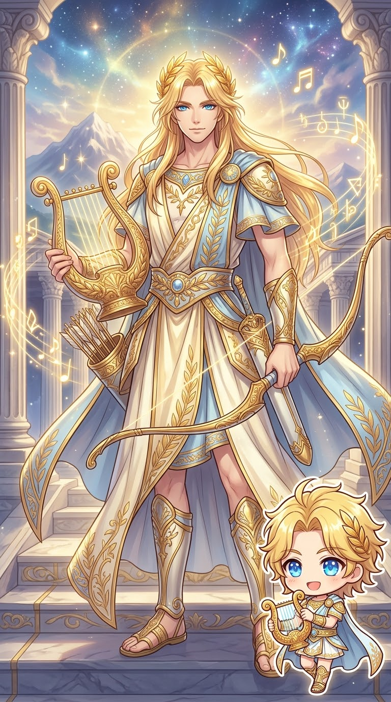

宙斯 Zeus
神職：天空、雷霆與神王
象徵：雷霆、鷹、權杖
家族：克洛諾斯與瑞亞之子；赫拉、波塞頓與哈帝斯的兄弟
天文連結：羅馬對應朱庇特 Jupiter，木星的名稱由此而來。
THE OLYMPIANS · GODS OF OLYMPUS
從泰坦時代的終結，到奧林匹斯神系的興起。認識十二主神、重要相關神祇，以及他們如何影響現代天體命名。
在希臘神話中，宙斯與盟友擊敗克洛諾斯一方的泰坦，奠定新的神界秩序。宙斯、波塞頓與哈帝斯分掌天空、海洋與冥界，奧林匹斯眾神則成為許多希臘神話與祭祀傳統的核心。
「十二主神」不是十二位最強神祇的排行榜，也不是每個地區、每個時代都固定不變的名單。以下採用常見的十二神組合，並在後文介紹其他傳統。
THE TWELVE OLYMPIANS
從神職、象徵、家族關係到天文名稱，逐一認識眾神。各神的神話在不同古代文獻中可能有差異。
神職：天空、雷霆與神王
象徵：雷霆、鷹、權杖
家族：克洛諾斯與瑞亞之子；赫拉、波塞頓與哈帝斯的兄弟
天文連結：羅馬對應朱庇特 Jupiter，木星的名稱由此而來。
神職：婚姻、王權與家庭秩序
象徵：孔雀、王冠
家族：克洛諾斯與瑞亞之女；宙斯的姊妹與配偶
天文連結：羅馬對應朱諾 Juno；小行星 3 Juno 以其命名。
神職：海洋、地震與馬匹
象徵：三叉戟、馬
家族：宙斯與哈帝斯的兄弟
天文連結：羅馬對應尼普頓 Neptune，海王星以此命名。
神職：農耕、穀物與土地豐饒
象徵：麥穗、火炬
家族：宙斯的姊妹；珀耳塞福涅之母
天文連結：羅馬對應刻瑞斯 Ceres，矮行星穀神星以此命名。
神職：智慧、工藝與戰略
象徵：貓頭鷹、橄欖樹、頭盔
家族：宙斯之女；誕生故事有不同版本
天文連結：羅馬對應密涅瓦 Minerva；小行星 93 Minerva 以其命名。

神職：音樂、預言、醫療與弓術
象徵：里拉琴、月桂、弓
家族：宙斯與勒托之子；阿耳忒彌斯的孿生兄弟
天文連結：後世常與太陽意象連結，但早期太陽神赫利俄斯有獨立神格。
神職：狩獵、野生動物與守護
象徵：弓、鹿
家族：宙斯與勒托之女；阿波羅的孿生姊妹
天文連結：羅馬對應狄安娜 Diana；後世常與月亮相連，但塞勒涅亦為獨立月神。
神職：戰爭與武力
象徵：長矛、盾牌
家族：宙斯與赫拉之子
天文連結：羅馬對應瑪爾斯 Mars，火星名稱由此而來。
神職：愛、美與吸引力
象徵：鴿子、玫瑰、貝殼
家族：赫西俄德敘述其由海中泡沫誕生；其他傳統另有父母說法
天文連結：羅馬對應維納斯 Venus，金星名稱由此而來。
神職：鍛造、火與工匠技藝
象徵：鐵鎚、鐵砧
家族：赫拉之子；父系記載因版本而異
天文連結：羅馬常對應伏爾坎 Vulcan；此名也曾用於假設的水星內側行星。
神職：神使、旅途、商業與交流
象徵：翼鞋、雙蛇杖
家族：宙斯與邁亞之子
天文連結：羅馬對應墨丘利 Mercury，水星名稱由此而來。
神職：葡萄藤、戲劇與狂喜祭儀
象徵：葡萄藤、常春藤、酒杯
家族：常見敘述為宙斯與塞墨勒之子
天文連結：羅馬傳統常與巴克科斯 Bacchus 相連；十二神名單有時由赫斯提亞取代。
VARIATIONS & OTHER MAJOR GODS
爐灶、家庭與祭祀之火的女神，也是克洛諾斯與瑞亞的子女之一。部分十二神名單包含赫斯提亞，而不包含狄俄倪索斯。
不能把「赫斯提亞主動讓位」當成所有古代來源一致記載的歷史事實。
冥界之王，宙斯與波塞頓的兄弟。雖然是極重要的神祇，卻通常不列入奧林匹斯十二主神，這與其冥界統治領域和祭祀定位有關，而非地位低下。
羅馬對應普路托 Pluto；冥王星的英文名稱由此而來。
提醒：十二主神名單與神祇親屬關係都可能因古代作者、地域與時代而有所不同。本頁以常見敘述作為入門，並保留重要差異。
MYTHOLOGY × ASTRONOMY
現代行星的英文名稱多承襲羅馬神祇名稱，而羅馬神祇與希臘神祇存在廣泛的文化對應。例如木星 Jupiter 對應宙斯、海王星 Neptune 對應波塞頓、火星 Mars 對應阿瑞斯、金星 Venus 對應阿芙蘿黛蒂。
這些是命名文化的延續，不是天文學認為行星真的由神祇統治。希臘神名、羅馬神名和現代天體名稱需要分開辨認。